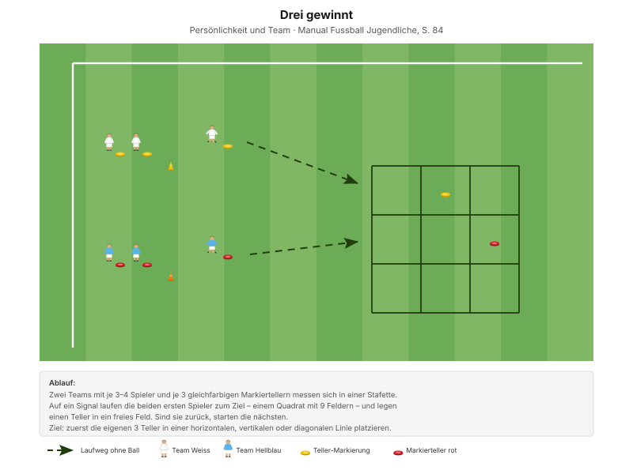

Erstes Training mit dem neuen Team. Zwei Ziele gleichzeitig: Die Junioren sollen sich kennenlernen – und du sollst sehen, wen du vor dir hast.
"Die Spieler kommunizieren mit den Teammitgliedern verbal und nonverbal gewinnbringend." Erkennungsmerkmal mentale Stärke, Manual Fussball Jugendliche, S. 80
Heute wird nicht gecoacht, sondern beobachtet. Greif nur ein, wenn eine Regel unklar ist. Namen bewusst verwenden, sobald du sie kennst – das ist die wichtigste Botschaft des ersten Trainings.
| Zeit | Min | Teil | Inhalt |
|---|---|---|---|
| 0–5 | 5 | Besammlung | Vorstellung, Namensrunde, Ablauf erklären |
| 5–17 | 12 | E1 | Aus den Zonen dribbeln · Big 4 zwischen den Wiederholungen |
| 17–23 | 6 | E2 | 4 gegen 4 mit Dribbelzonen |
| 23–30 | 7 | E3 | Dribbling und Sprint (Explosivität) |
| 30–42 | 12 | H1 | "Drei gewinnt" · Stafette als Team |
| 42–45 | 3 | Pause | Trinken, Umbau auf das grosse Feld |
| 45–70 | 25 | H2 | 3 gegen 3 mit 6 Zielspielern |
| 70–82 | 12 | Abschluss | Freies Spiel 5 gegen 5 plus 2 Torhüter |
| 82–90 | 8 | Ausklang | Blitzlicht-Runde, Verabschiedung |
| Total | 90 |
Einstieg 25 · Hauptteil 37 · Abschluss 20 Min. – nach dem Trainingsschema des Manuals (S. 43).
Nur einmal umbauen: Das Zonenfeld des Einstiegs liegt im späteren Spielfeld. Für H1 braucht es nur ein 3×3-Raster aus Markiertellern am Spielfeldrand.
Eigene Skizze · Platzaufteilung
Nur einmal aufbauen – das Einstiegsfeld liegt im späteren Spielfeld.
12 Minuten · 30 × 22 m · alle 12 Spieler
Eigene Skizze · Aus den Zonen dribbeln
3 Wiederholungen à 1'30''–2' – zwischen den Wiederholungen je zwei Präventionsübungen.
"1. Ballkontakt in den freien Raum mit einer engen, rhythmischen Ballführung" SFV-Lernbaustein "Einstieg TE: Dribbling 01", Phase 1
Die Namensregel kostet nichts und löst das Hauptproblem des ersten Trainings nebenbei. Sie ersetzt kein Namensspiel – sie ist eines, nur mit Ball und ohne Leerlauf.
Je zwei Übungen zwischen den Wiederholungen, 25 Sekunden pro Übung:
| Bereich | Übung | Worauf achten |
|---|---|---|
| Fussgelenk | Alphabet balancieren | Das Knie knickt weder nach innen noch nach aussen und beugt sich nicht über die Fussspitze hinaus. |
| Knie | Dynamische Ausfallschritte | Das Knie knickt nicht ein und bildet einen rechten Winkel. |
| Hüfte | Mobilität in tiefer Position | Die Fersen bleiben in Kontakt mit dem Boden, der Blick ist nach vorne gerichtet. |
| Hamstrings | Dynamische Standwaage | Standbein leicht gebeugt, das andere Bein und der Oberkörper so waagerecht wie möglich. |
"Arbeit mit Zeitvorgaben – nicht mit Anzahl Wiederholungen." Prinzip Körperstabilität, Manual Fussball Jugendliche, S. 75
Zwei Punkte pro Übung nennen, nicht mehr. Qualität vor Tempo.
6 Minuten · gleiches Feld · 3 Wiederholungen à 1'30''–2'
Kein Umbau – dieselben Zonen, jetzt gegeneinander. Mit 12 Spielern laufen zwei Felder parallel als 3 gegen 3.
"1. Ballkontakt in den freien Raum mit einer engen, rhythmischen Ballführung" SFV-Lernbaustein "Einstieg TE: Dribbling 01", Phase 2
Zum Beobachten: Wer sucht das Dribbling, wer den Pass? Das ist die erste belastbare Information über die Spielertypen.
7 Minuten · 2 Bahnen · zwei Teams im Wettkampf
Manual-Vorlage · Diagramm 44 "Dribbling und Explosivität" (S. 73)

Dieselbe Form beschreibt der Lernbaustein als "Dribbling und Sprint".
| Parameter | Vorgabe |
|---|---|
| Distanz | 15–30 m |
| Wiederholungen | 3 |
| Pause zwischen Wiederholungen | 1/15 (Belastung × 15) |
| Serien | 3 |
| Pause zwischen Serien | 1'30''–2' |
"Erholungszeit: 10- bis 20-fache Dauer der Belastungszeit, abhängig von der Laufdistanz. Vollständig erholen zwischen den Wiederholungen." Prinzipien Explosivität, Manual Fussball Jugendliche, S. 72
12 Minuten · 2 Teams à 3–4 · Stafette
Manual-Vorlage · Diagramm 67 "Drei gewinnt" (S. 84)

Mit 12 Spielern laufen drei Teams à 4 gegeneinander – zwei spielen, eines zählt und feuert an, dann Wechsel.
Warum diese Form am ersten Abend: Sie ist in zehn Sekunden erklärt, alle rennen, und sie lässt sich nur gewinnen, wenn das Team vorher redet. Genau das willst du sehen.
"Wie habt ihr euch gefühlt? Wie ist es euch als Gruppe ergangen? Was hat zum Erfolg oder Misserfolg beigetragen?" Entwicklungsfragen zur Teamfähigkeit, Manual Fussball Jugendliche, S. 84
Zum Beobachten: Wer übernimmt die Absprache? Wer ordnet sich ein? Wer spielt für sich?
25 Minuten · 35 × 25 m · alle 12 Spieler
Manual-Vorlage · Diagramm 03 "3 gegen 3 mit 6 Zielspielern in den Pylonentoren" (S. 58)

3 + 3 + 6 = genau 12. Diese Form passt ohne jede Anpassung auf den Kader.
"Das Team in Ballbesitz versucht, die Zielspieler des gegnerischen Teams anzuspielen. Sobald dies gelingt, spielen die 3 Zielspieler gegen die 3 roten Spieler." Spielform, Manual Fussball Jugendliche, S. 58 (Diagramm 03) · 35 × 25 Meter
Warum diese Form: Jeder ist dauernd beteiligt – entweder im Feld oder als Zielspieler – und die Rollen wechseln ständig. Es gibt kein Warten und keine Rangordnung. Für ein erstes Training ist das genau richtig.
12 Minuten · ganzes Feld, 2 Tore
Teams mischt der Trainer – nicht die Spieler. Wer zuletzt gewählt wird, fühlt sich schlecht, und am ersten Abend wäre das der falsche Start.
Bewusst andere Zusammensetzung als in H2, damit alle einmal miteinander gespielt haben.
8 Minuten · Cool-down im Gehen, dann Kreis
Zuerst 3–4 Minuten lockeres Auslaufen, dann der Kreis.
Ausblick: "Nächstes Mal legen wir gemeinsam unsere Teamregeln fest. Überlegt euch bis dann eine Regel, die euch wichtig ist – wie gehen wir miteinander um, was erwarten wir voneinander, was tun wir, wenn es nicht läuft?"
Material gemeinsam aufräumen.
Nach dem ersten Training unbedingt festhalten – die Notizen sind die Grundlage für die Spielereinschätzung:
| Teil | Vorlage | Seite |
|---|---|---|
| E1 – E3 | SFV-Lernbaustein "Einstieg TE: Dribbling 01", Phasen 1–3 | – |
| E3 | Integrierte Trainingsform "Dribbling und Explosivität" (Diagramm 44) | 73 |
| H1 | Teamfähigkeit "Drei gewinnt" (Diagramm 67) | 84 |
| H2 | Spielform "3 gegen 3 mit 6 Zielspielern" (Diagramm 03) | 58 |
| Mentale Stärke, Erkennungsmerkmale | Persönlichkeit und Team | 80 |
| Explosivität, Körperstabilität | Athletik und Gesundheit | 72, 75 |
| Trainingsaufbau | Trainingsschema (Abb. 19) | 43–45 |
Alle Seitenangaben beziehen sich auf das J+S Manual Fussball Jugendliche (BASPO/SFV, 2022). Spielerzahlen und Feldmasse sind auf einen Kader von 12 Spielern angepasst. Dieser Trainingsplan wurde mit Unterstützung von KI (Claude, Anthropic) erstellt.